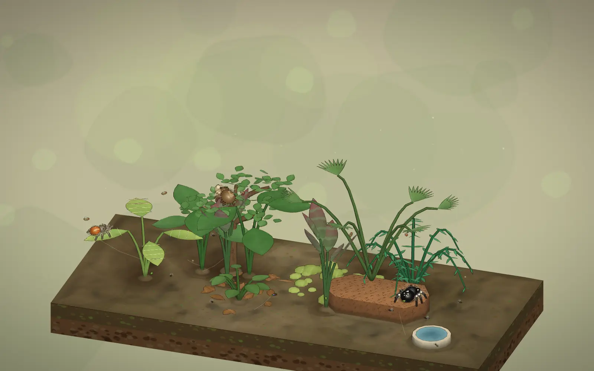

A small world, full of life
Little leaps.
Quiet wonders.
Build a living home for jumping spiders. Watch them explore, hunt, and make the world their own.
HD-2D & Storybook · Built for gentler, longer sessions.
Your jumper progress saves on this browser.
